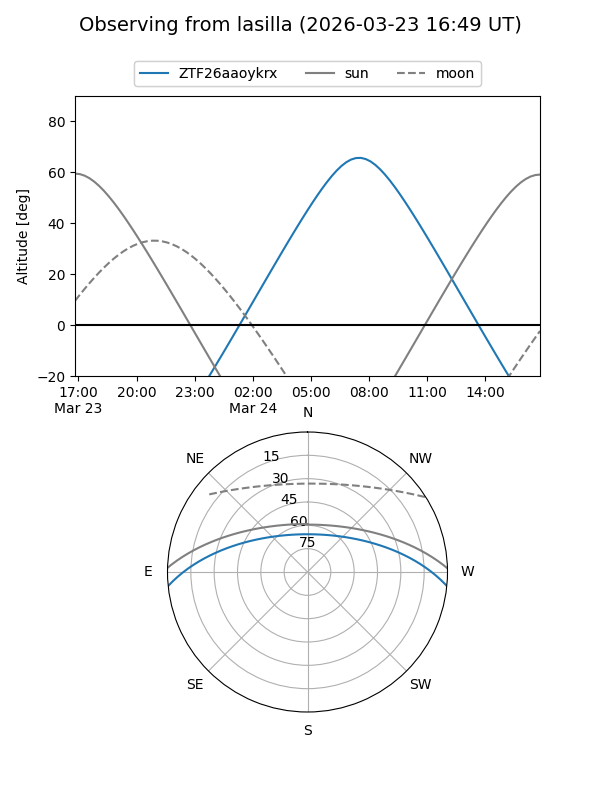
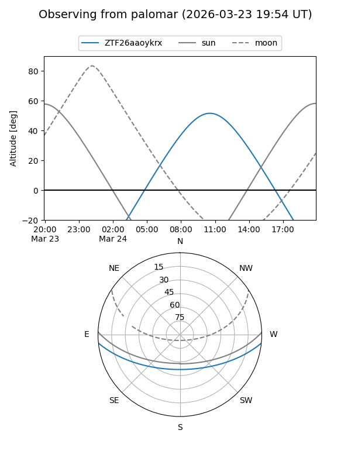

ZTF26aaoykrx
Target ZTF26aaoykrx at 2026-03-23 12:19
Aliases and brokers:
FINK: link
Lasair: link
ALeRCE: link
alt names
ZTF26aaoykrx (ztf,fink_ztf)
Coordinates:
equatorial (ra, dec) = 222.9088,-4.87309
equatorial (HMS+DMS) = 14:51:38.12,-04:52:23.13
galactic (l, b) = (349.7111,+46.78996)
Flags:
Photometry:
last ztfg=16.93
1 ztfg detections
Lightcurve
Visibility


Additional plots